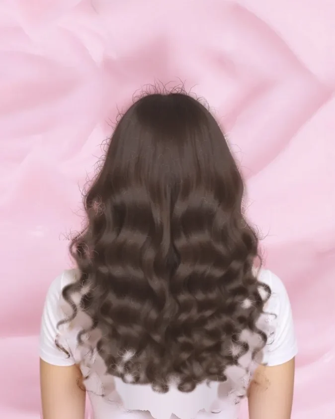
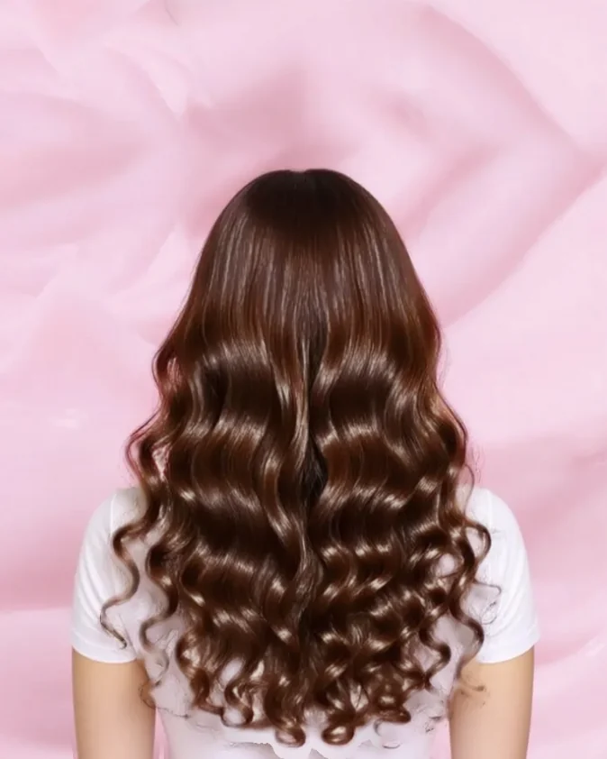

F Comb it through · brush the photo to reveal the after
Real results
Comb through, see the change
Brush over the photo with your cursor or finger. Wherever you comb, the after shows through.
0%combed
F Comb it through · brush the photo to reveal the after
Real results
Brush over the photo with your cursor or finger. Wherever you comb, the after shows through.
G Honeycomb lens · the after inside a hexagon magnifier
Look closer
Move the lens over the hair. Inside it, the same client after their ÀLara routine.
H Lenticular · strips turn from before to after
Real results
Before After
I Magazine spread · works with any real-life photos
The ÀLara journal
Before
After
Placeholder
J Time-lapse scroll · scroll down slowly


Day by dayPlaceholderOne month, one routine
Curls On Care Kit
↓ Keep scrolling